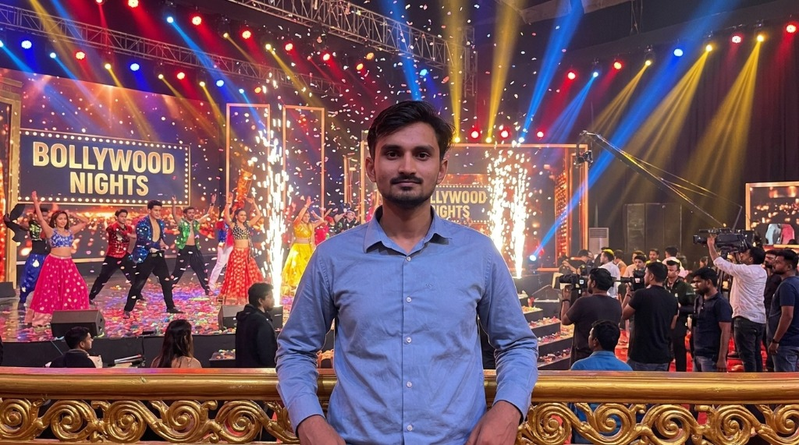

01 / DataSenseAI
DataSenseAI
An AI-powered tool querying CSV/PDF files seamlessly using NLP, designed for fundamental stock analysis and online integration.
LangChain · Python · NLP
AI & Backend Engineer — Available for Collaboration
Autonomous systems · LLM integration · Multi-agent platforms · Scalable backends
About
I am an AI & ML Engineer learning and executing automations, and pushing the boundaries of what autonomous agents can achieve. I architect the invisible backend engines — integrating LLMs, vector databases, and multi-agent systems.
My work sits at the intersection of complex data pipelines and agentic automation. By leveraging tools like n8n, FastAPI, and advanced prompt engineering, I design systems that don't just think, but execute autonomously.
Selected Work
A collection of interconnected platforms designed for scale and intelligence.
An AI-powered tool querying CSV/PDF files seamlessly using NLP, designed for fundamental stock analysis and online integration.
LangChain · Python · NLP

A full-stack platform deploying Next.js 14, Vercel KV, and a rule-based AI chatbot for real-time product discovery.
Next.js 14 · React · FastAPI · TypeScript
A multi-channel conversational UI connecting LLMs, speech synthesis (ElevenLabs), and vector knowledge bases via n8n.
ElevenLabs · n8n · PostgreSQL
NLP-based similarity engine scoring resumes against job descriptions using tokenization, embedding search, and vector DBs.
Python · FastAPI · ChromaDB · Scikit-learn
Vision
I'm building my edge at the intersection of AI, automation, and systems — by learning fast and executing in real systems.
I don't just study concepts; I implement agents, integrate LLMs into workflows, and design backend systems that actually run. Every project is a step toward understanding how intelligent systems behave in production — not just in theory.
My focus is simple:
learn → build → stress-test → iterate.
I'm not trying to "understand AI."
I'm training myself to engineer it.